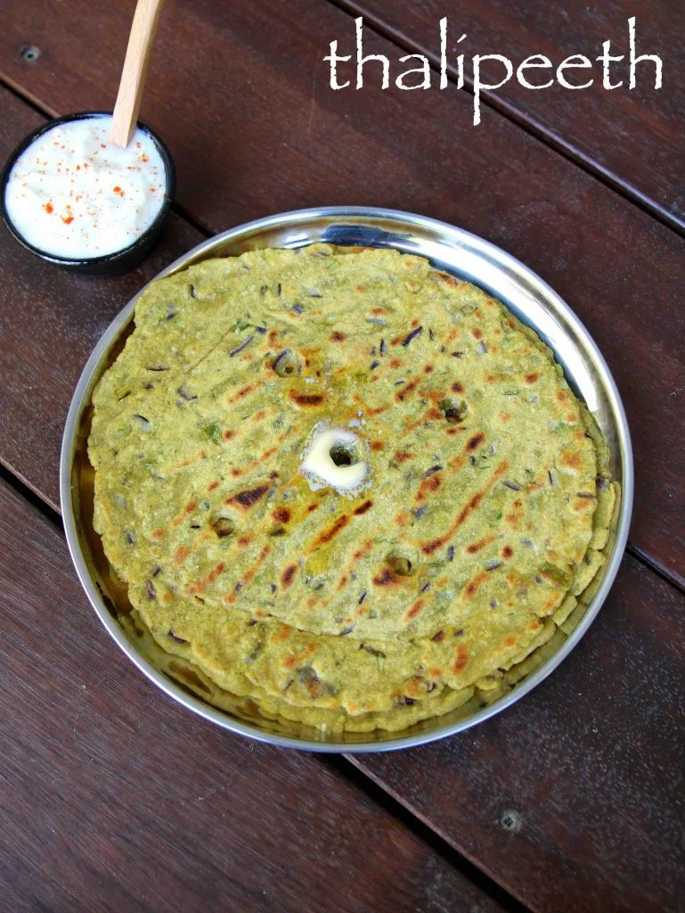

Marathi Thalipeeth

Description
Thalipeeth is a spiced flat bread made from multigrain flour.
Thalipeeth makes for a healthy, tasty and nutritious breakfast or snack. You can even pack them in the lunch box.
You may find the list of ingredients,
a little lengthy. But don’t worry, as the recipe otherwise, is quite easy and simple.
In Maharashtrian homes thalipeeth bhajni is made in large amounts and stored, which is then later used to make thalipeeth.
Thalipeeth bhajni is multigrain flour Made with whole grains, millets and spices. Readymade thalipeeth bhajni flour is also
available in markets.
The thalipeeth recipe shared here uses various flours to make the mix instantly and then make these spiced flatbreads.
- I have used jowar flour (sorghum flour), atta (whole wheat flour), bajra (pearl millet flour), besan (gram flour) and rice flour.
- You can always add the flours which you have.
- You can even use urad dal flour or ragi flour.
- For a gluten free version skip the whole wheat flour in the recipe and add ¼ cup more of the rice flour.
Ingredients
For Thalipeeth dough, below ingredients are required. They will make 12 thalipeeths
- 1/2 cup jowar
- 1/4 cup atta
- 1/2 cup bajra
- 1/4 cup besan
- 1/4 cup rice flour
- 1/4 teaspoon ajwain
- 1/4 teaspoon haldi
- 1/4 teaspoon lal mirch
- 1/2 teaspoon jira powder
- 1 teaspoon dhaniya powder
- 1 tablespoon sesame seeds
- 1 medium onion
- 1 teaspoon finely chopped ginger
- 1/4 teaspoon dhaniya
- 1 green chilli
- 1 teaspoon oil
- salt as required
- 2 or 3 tablespoon water
Steps
Thalipeeth Dough
- First take everything aside from water and oil in a mixing bowl or pan
- Add 1 teaspoon oil
- Mix well
- Add water in parts as required
Begin to mix the dough. Continue this process of adding water and mixing to make a smooth and soft dough.
Dough has to be manageable and very smooth. Depending on quality and texture of flour, you will need to add more or less water.
Making Thalipeeth
- Then wet a muslin cloth or a cotton kitchen napkin with water. Wrung the extra water and spread the muslin on the rolling board. The muslin should be moist. Also heat the tawa.
- Now take a portion of the dough. Roll in your palms and flatten it on the muslin.
- With your fingers gently press and flatten the dough to get a flatbread with ¼ inch thickness. While flattening you can sprinkle a few drops of water also on the dough.
- Make hole in the center or make 3 to 4 holes at the sides. This helps in frying the thalipeeth well.
- Spread a bit of oil on the tawa. The tawa has to hot. So you can keep it on medium to high flame. Regulate the flame as required.
- Lift the muslin cloth and gently place it with the thalipeeth side touching the tawa.
- Now carefully peel the muslin from the rolled thalipeeth dough.
- Sprinkle some oil in the holes as well as the edges.
- Cover with a lid and let the thalipeeth cook for 2 to 3 minutes or till you the base is golden and crisp. You can brown the base more if you want.
- Turn over and continue to cook the second side also till you see some brown or charred spots on them.
- Remove and serve thalipeeth hot.
- If not serving hot, then you can stack the thalipeeth in a roti basket or casserole, so that they stay warm. Prepare all the thalipeeths this way.
- Serve thalipeeth recipe with white butter or fresh curd or pickle or thecha.
Reference